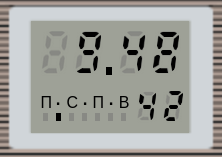
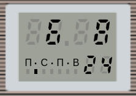

В реальном МК 87 помимо самого устройства
установлен и отдельный часовой модуль из наручных часов "Электроника 51" (не путать с МК 51).
Единственное отличие - отсутствие подсветки и, соответственно, кнопки 3 для нее. О работе с модулем часов можно узнать как из
руководства по эксплуатации к МК 87,
так и из паспорта на сами часы.
Написанный на JavaScript модуль "watch_51" симулирует поведение этих часов, в том числе все присутствующие режимы.
Поскольку это симулятор (т.е. использует собственную псевдомикропрограмму для работы, а не родные алгоритмы микрочипа часов),
его симуляция может быть не совсем точной (тем более что этих часов у меня нет).
Дисплей часового модуля состоит из 3 групп семисегментных индикаторов (две большие и одна малая), секундной точки,
а также из линейки на 7 сегментов, отображающей день недели (начало с понедельника).
У модуля присутствуют две кнопки. Первая переключает режимы отображения и изменяет значения при настройке.
Вторая включает режим настройки и позволяет переключаться между значениями.
По умолчанию при каждой загрузке страницы на часах выставляется текущее системное время и устанавливается первый режим отображения (в руководстве МК 87 назван дополнительным режимом) - часы, минуты, день месяца.
|  |  | |
| режим 1 (дополнительный) часы, минуты, день месяца (секундная точка мигает) |
режим 2 (основной) часы, минуты, секунды (секундная точка горит постоянно) |
режим 3 (календарь) день месяца, месяц, год (секундная точка не горит) |
Режимы 1 и 2 могуть быть включены постоянно, в то время как режим 3
включается только на 2 секунды, после чего происходит возврат в режим 1.
При входе в режим настройки изменяемое значение начинает мигать, его можно увеличивать, нажимая кнопку 1.
Переключение между значениями производится кнопкой 2 и происходит в следующем порядке (после дня недели режим выключается):
После 12 секунд (в инструкции указано 8, но по замерам владельцев это происходит через 12 секунд)
бездействия режим настройки автоматически выключается.
Исключение составляет лишь коррекция секунд, при котором выхода из режима не происходит. При нажатии на кнопку 1 счетчик секунд сбрасывается на 0,
при этом если количество секунд было равно 30 или больше, вместе со сбросом происходит прибавление одной минуты.
Из панели опций можно произвести сброс часов (как если бы были нажаты обе кнопки сразу), для этого служит кнопка "Reset clock (11:11)".
Согласно инструкции, при сбросе на часах устанавливаются следующие показания:
11 часов, 11 минут, 11 секунд, 11 день, 11 месяц, 11 год, день недели - понедельник.


Кнопка "Set real time" устанавливает на часах текущее системное время, в случае если вы сбили его при настройке.